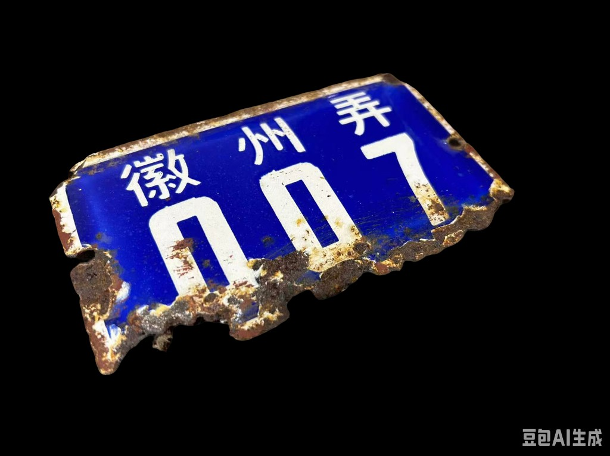
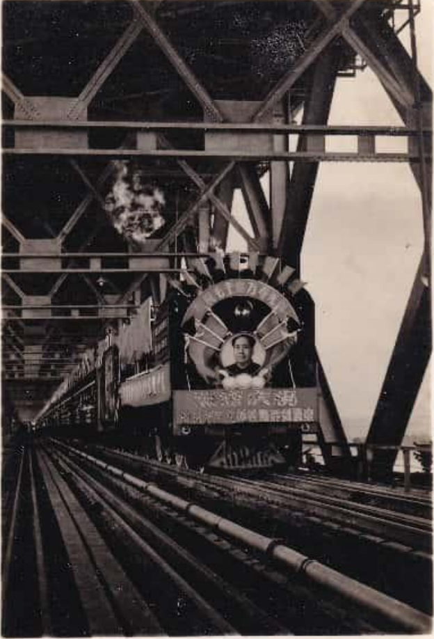
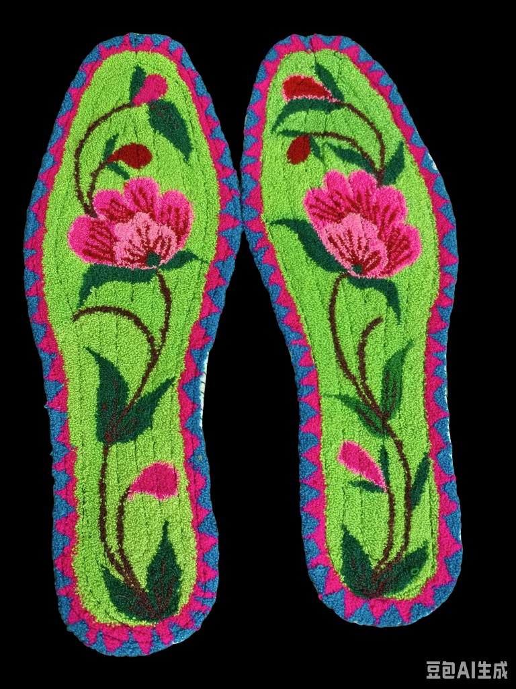
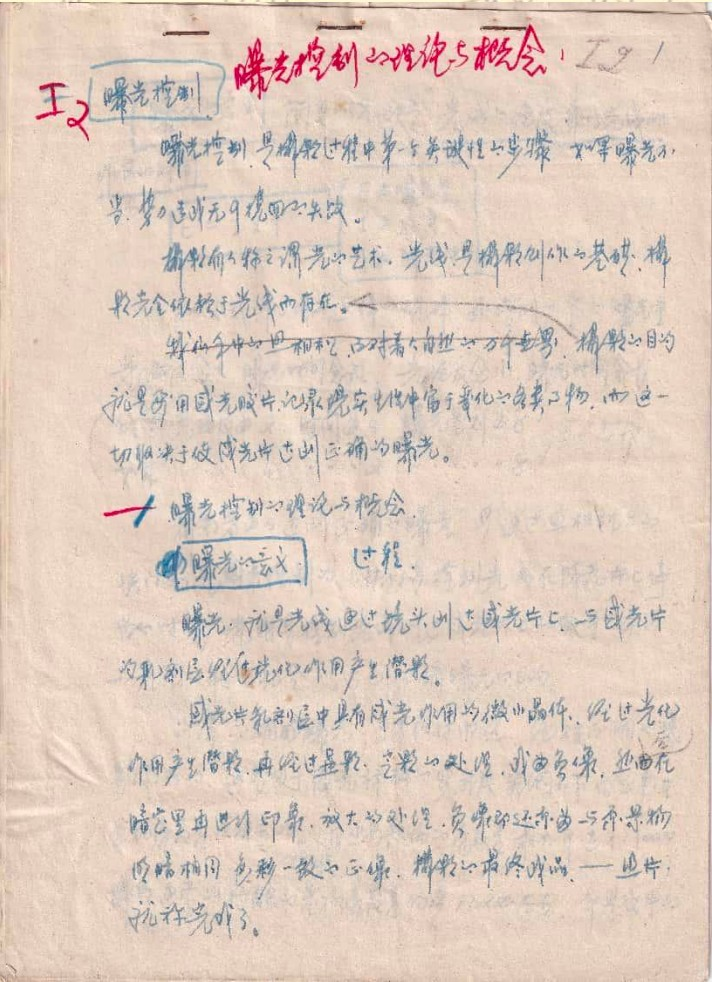
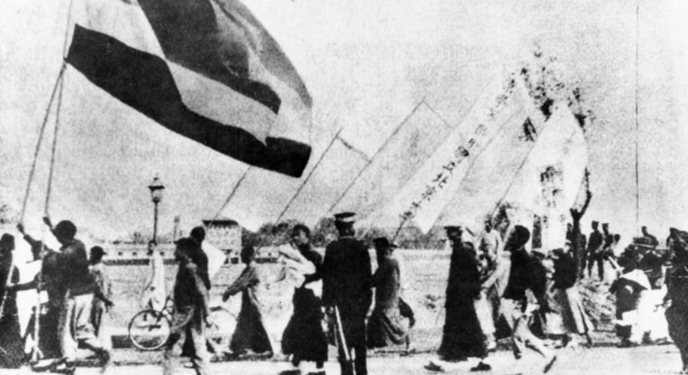
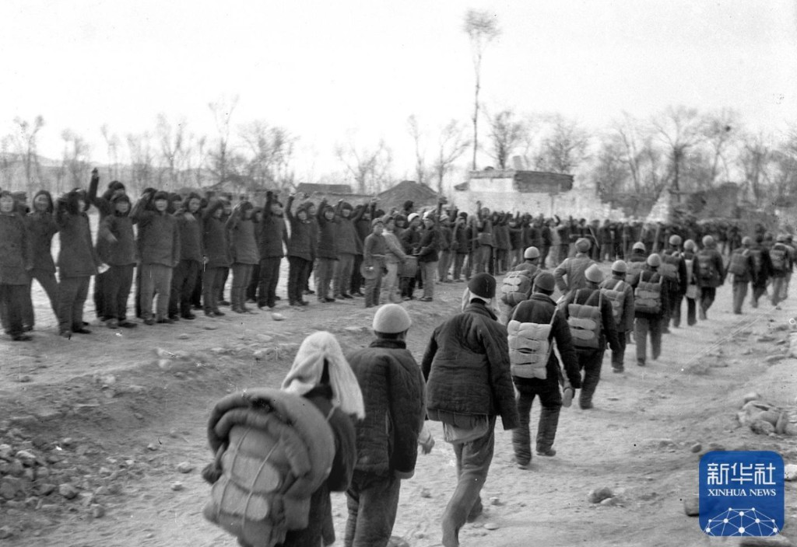
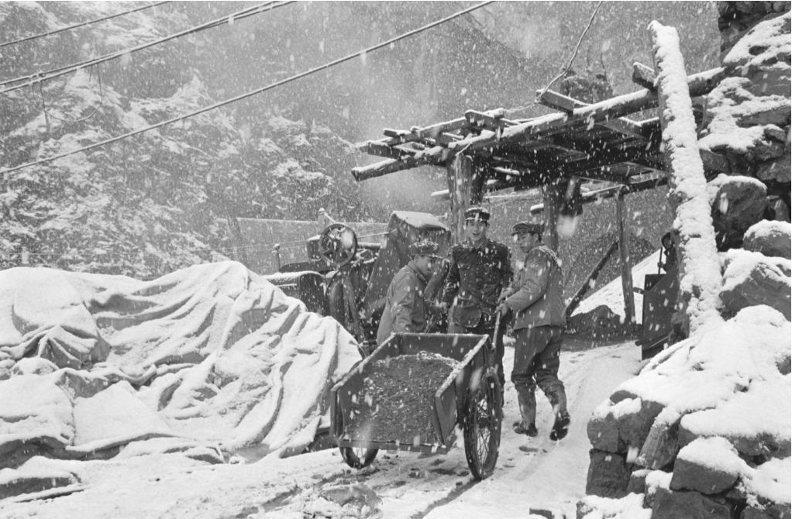
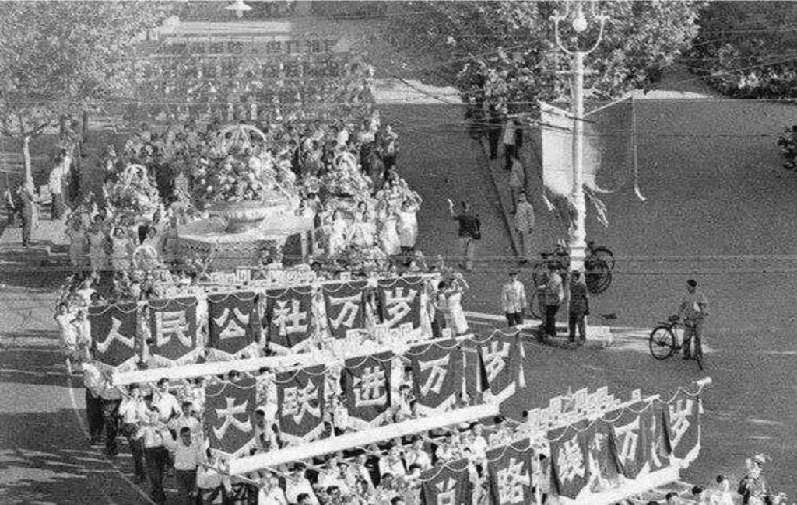
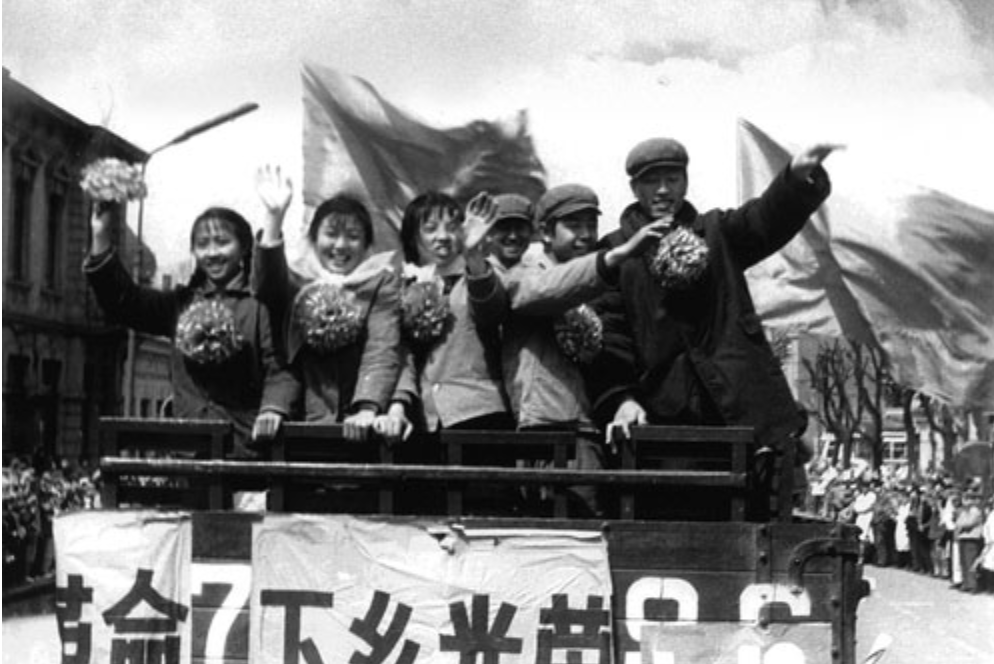
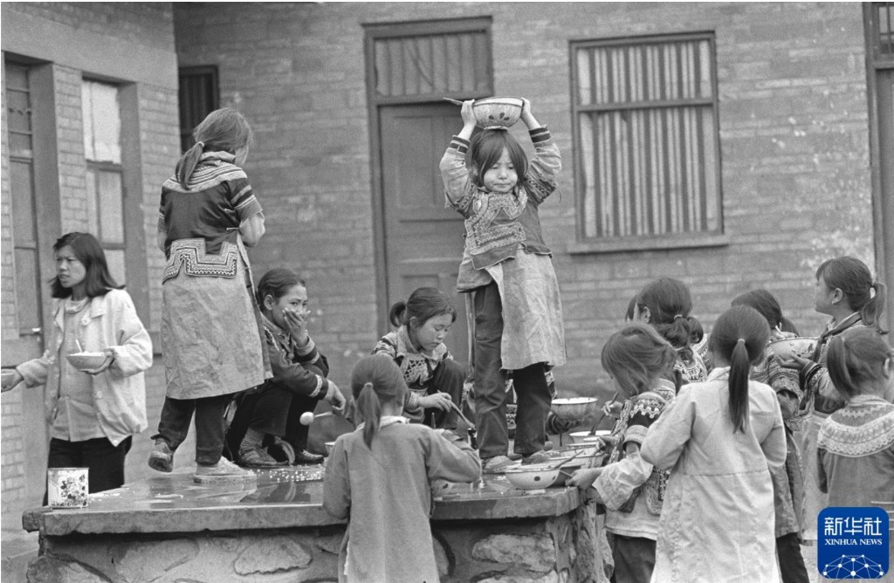

loading...

Photograph provided by Shen Feidi; photographed by Hu Zurui.









Compiled from Story Boards endnotes (Chicago-style references).
Special Thanks to all interview participants for sharing their stories
If this project reminds you of your own family stories, experiences, or memories, I would love to hear from you.
For collaborations, feedback, or story submissions:
Email amyhukeyu@gmail.com